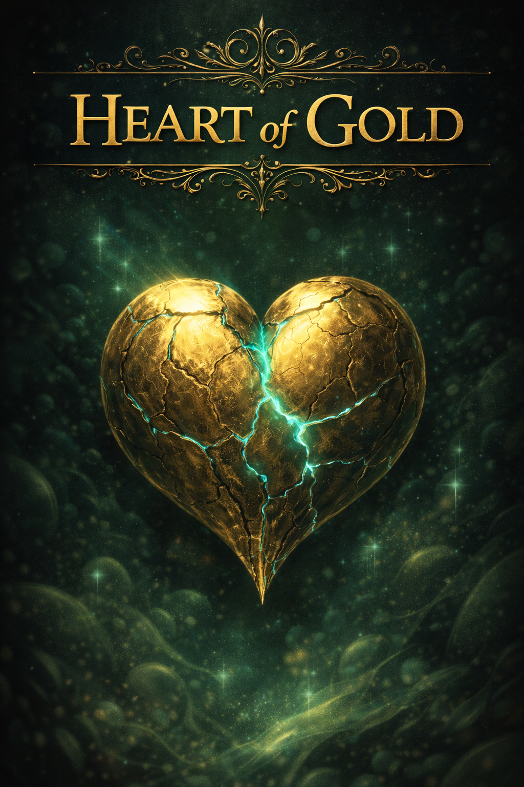
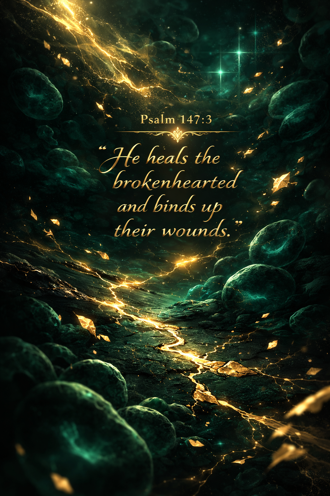
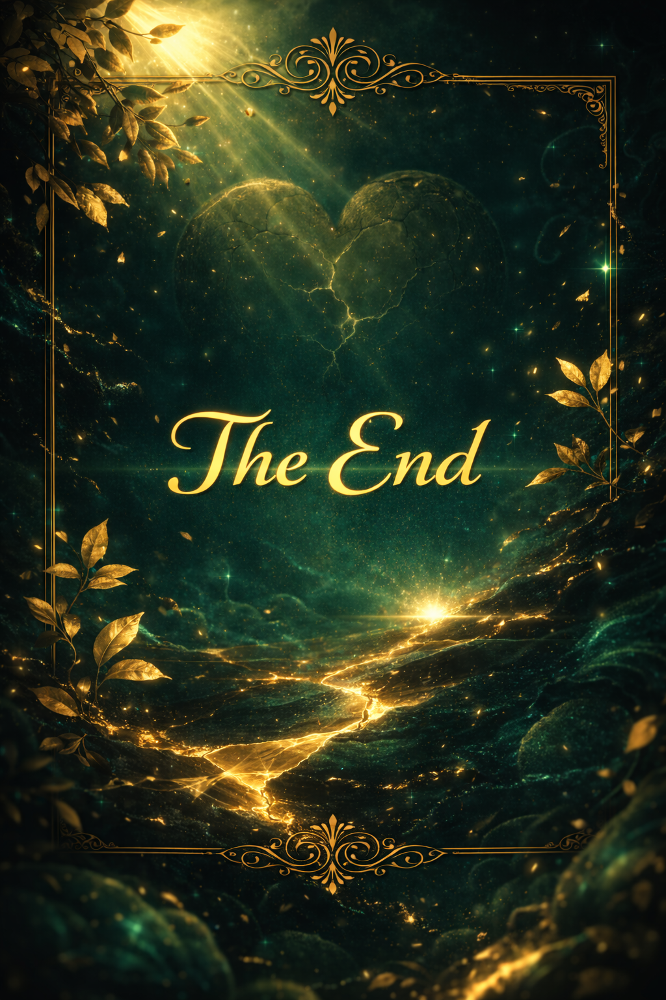

Dear Amaka Enueme,
Sorry this took so long. I had a pile of school projects that pushed this back, but after our KD, I still wanted to follow through and write to you.
One of the most memorable parts of our conversation during the KD was hearing you talk about your work in bioengineering and your focus on sickle cell. I’ve always had a general curiosity about medical things, probably because of my parents, but hearing you talk about sickle cell made it feel real in a different way. There was conviction behind it. There was a purpose. And that conversation was really interesting
You’re clearly driven, but what makes that drive powerful is that it’s aimed at helping people. That’s rare. You carry a healing heart. The kind that sees suffering and doesn’t turn away from it, but instead leans in and asks, “How can I help?” You took something painful and personal that you witnessed and turned it into direction. That says a lot about you. And even in the hard seasons, that direction is meaningful.
I don’t know exactly where your passion will take you, but I genuinely pray that you have the opportunity to heal many people—both physically through your work and spiritually through your faith—along the way.
Psalm 147:3
“He heals the brokenhearted and binds up their wounds.”
